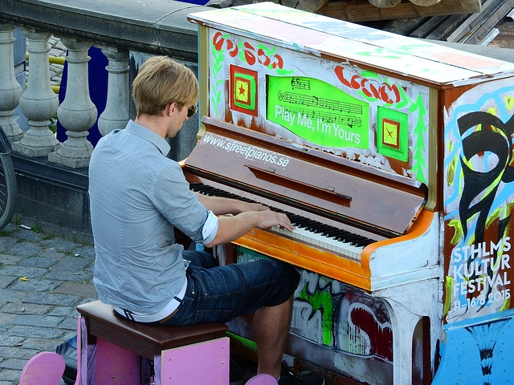
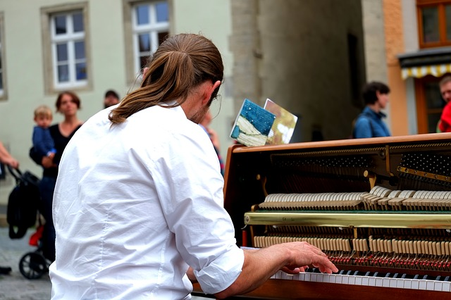
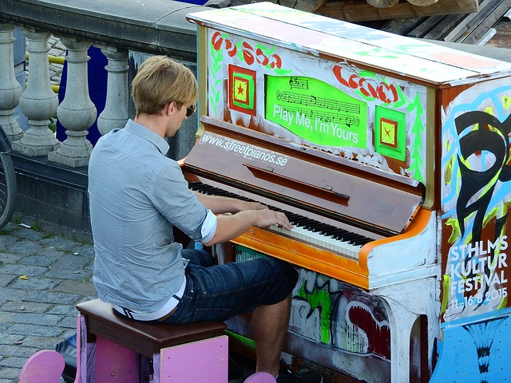
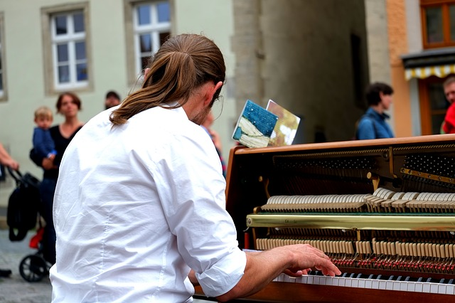
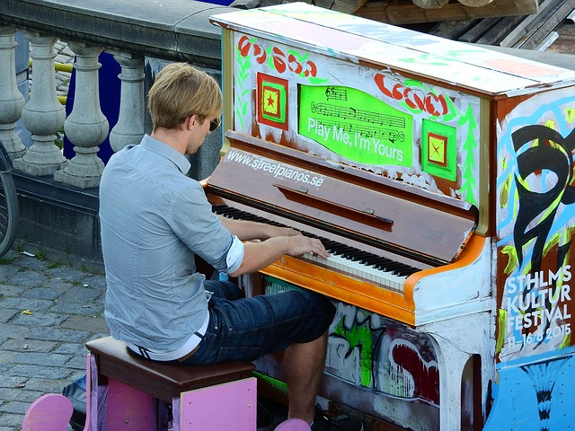
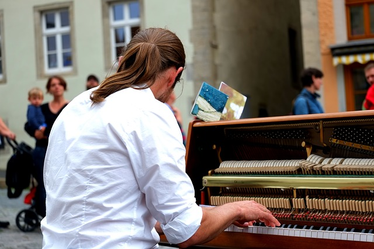

- Symphonies through Piano
- Home
- Biography
- Curriculum
- Portfolio
- Contact
Portfolio

 



The story of piano instructor Gabriel started when he was but a young child. At the age of six years old, Gabriel began taking piano lessons under the direction of his father, who at that point was credited with creating some of the most beautiful symphonies the world has ever heard. Gabriel's father Bourgello, has worked with numerous celebrities, and you can even find some of his most revered songs on "Now that's a Symphnoy! Greatest hits Volume 2". After performing for several audiences throughout his early career, Gabriel then attended Berklee University and graduated with an M.M. in Piano Performance. He has since been busy assisting others with their careers while still performing at live venues all across the world. However, Gabriel has decided to take a break from live performances and is now more interested in teaching piano and the composition of symphonies to prospective students.
If you are a dedicated student in search of a tutor, then please use the contact information listed below to learn how you too can create music that will be loved by all.
During your first few lessons, an emphasis will be put on artistic skills, solo, and ensemble performances as well. To truly master the piano, Gabriel recommends that students receive private lessons with him at least 3 times a week. Gabriel also recommends that his students network with other students of different genres in their area. This includes attending live performances and gatherings at local conferences. The ability to meet with others and collaborate on performances is a large part of becoming a renowned professional and pianist. Therefore, Gabriel truly reinforces these virtues unto his students..


Phone: 813-220-2200
E-mail: symphonypianist@yahoo.com